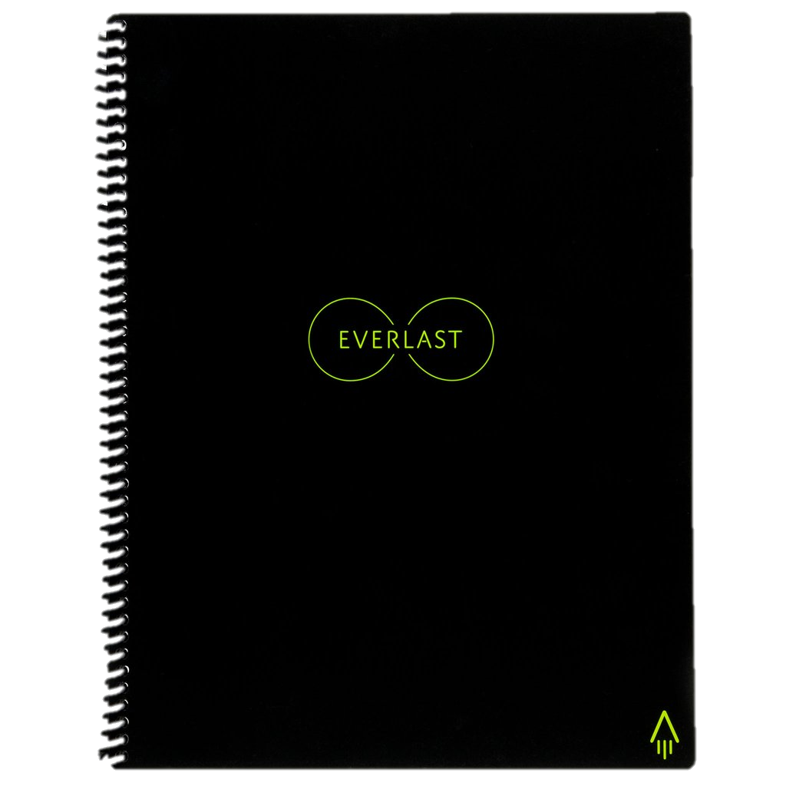
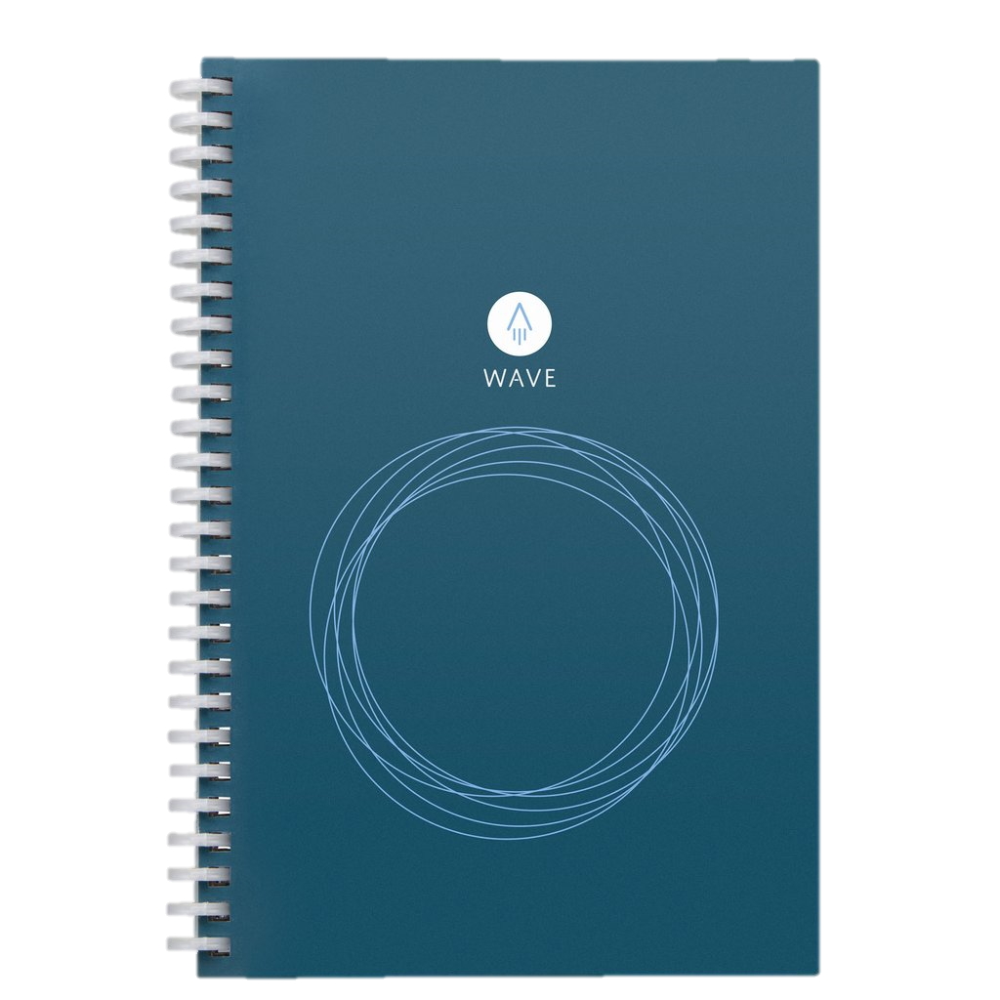

Rocketbook es una compañía que nace a finales de 2013 con la idea de crear cuadernos inteligentes y reusables, pero sin pasar a cuadernos digitales pues su meta es cuidar la naturaleza y los beneficios básicos y esenciales de la escritura.
Esta campaña pretende promover no solo el uso de éstos cuadernos hacia el público en general, sino también propagar su uso dentro de las escuelas como cuadernos principales.